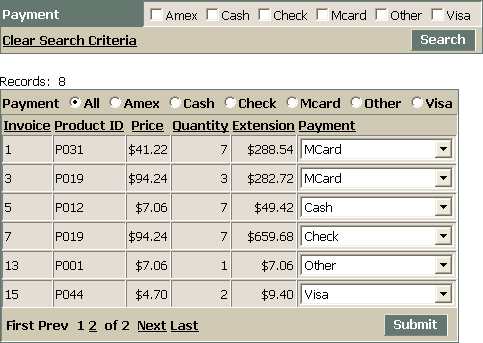
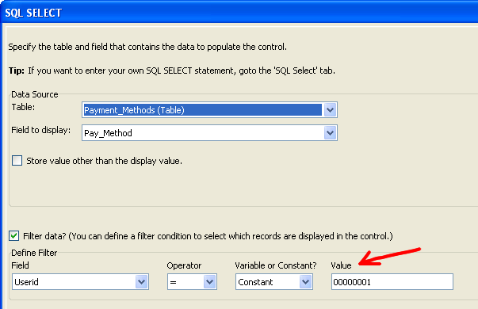
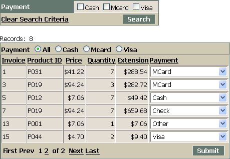

Filtering an ADO Grid with a Session Variable
Many web application developers want to filter the records that they display, so that a user sees only the records that belong to him or her. This topic explains the technique to use.
The following grid component displays all the records of the invoice_items table. The check boxes in the Search Part, the radio buttons in the Quick Search, and the drop down list box in the Payment column display all the payment methods found in the invoice_header table.

The SQL expression that retrieved these records from the AlphaSports.mdb file was the following.
SELECT Invoice_Items.ID, Invoice_Items.INVOICE_NUMBER, Invoice_Items.PRODUCT_ID, Invoice_Items.PRICE, Invoice_Items.QUANTITY, Invoice_Items.EXTENSION, Invoice_Items.Userid FROM Invoice_Items Invoice_Items ORDER BY Invoice_Items.INVOICE_NUMBER, Invoice_Items.PRODUCT_ID |
The user_names and invoice_items tables have an eight character field named userid.


When you log into this application, the logindialog component on the login.a5w page runs the following code in its validate event.
if user_name = "" .or. password = "" then currentform.has_error = .t. currentform.error_message = "User name or password cannot be blank." else dim correct_password as c DIM level as N correct_password = lookup("[PathAlias.ADB_Path]\user_names", "user_name=" + quote(user_name), "password") if correct_password = password then
level = lookup("[PathAlias.ADB_Path]\user_names", "user_name=" + quote(user_name), "level")
session.protectedSecurityLevel = level
session.protectedUserID = lookup("[PathAlias.ADB_Path]\user_names", "user_name=" + quote(user_name), "UserID")
session.WASDemo.UserName = user_name else
currentform.has_error = .t.
currentform.error_message = "Invalid user name or password." end if end if |
The interesting part of this code is this line. This line creates the protected session variable session.protectedUserID and assigns it the value it reads from the user_names table.
session.protectedUserID = lookup("[PathAlias.ADB_Path]\user_names", "user_name=" + quote(user_name), "UserID") |
The A5W page that contains the filtered grid component shown above initially has the following code.
with tmpl_filtered_ADO componentName = "filtered_ADO" end with |
After editing, it looks like this.
with tmpl_filtered_ADO componentName = "filtered_ADO" if eval_valid("session.protecteduserid") then
ADO.SQL = "SELECT Invoice_Items.ID, Invoice_Items.INVOICE_NUMBER, Invoice_Items.PRODUCT_ID, Invoice_Items.PRICE, Invoice_Items.QUANTITY, Invoice_Items.EXTENSION, Invoice_Items.Userid FROM Invoice_Items Invoice_Items WHERE Invoice_Items.Userid = '" + session.protecteduserid + "' ORDER BY Invoice_Items.INVOICE_NUMBER, Invoice_Items.PRODUCT_ID"
SearchField_Info[1].CheckBox.ADO.Parameters[1].value = session.protecteduserid
field_info[8].DropDownBox.ADO.Parameters[1].value = session.protecteduserid
QuickSearch.Radiobutton.ADO.Parameters[1].value = session.protecteduserid end if end with
|
As you can see above, each SQL statement also has an ADO.Parameters[1].value property. If you populate a choices list with a SQL SELECT statement and set a filter expression, you will see that ADO.Parameters[1].value property contains the "value" parameter. These override expressions change the properties to be equal to session.protecteduserid.

The following picture of the same grid displays only the records for the user whose userid from the user_names table matches the eight character userid value (in this case "00000006") in these invoice_items table records. In addition, the check boxes in the Search Part, the radio buttons in the Quick Search, and the drop down list box in the Payment column display only the payment methods allowed for the current user. This information is retrieved from the payment_methods table.

See Also